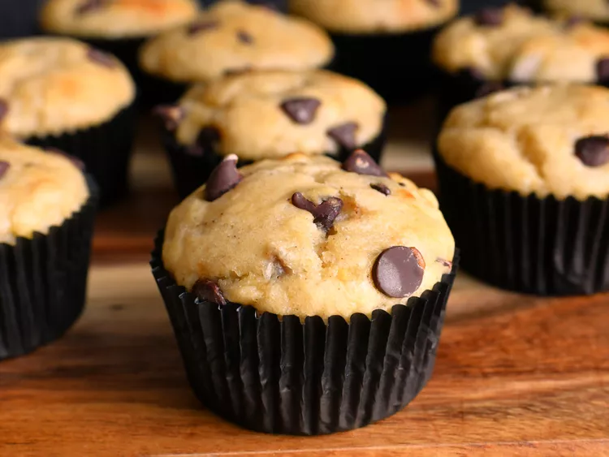

Banana Chocolate Chip Muffins

Description
Banana Chocolate chip muffins are a nice, warm treat almost anytime. If you
like to change up your morning meal now and then or take a snack with you for
the day, this is a great way to do that. Store these muffins in an airtight
container at room temperature for up to five days or in the freezer for up to
three months. To avoid freezer burn, wrap each muffin in plastic wrap and
store in a freezer bag or container. Reheat in the microwave or thaw on the
counter at room temperature when you want one.
Ingredients
- 1 ¾ cups all-purpose flour
- ¾ cup sugar
- 1 teaspoon baking powder
- 1 teaspoon baking soda
- ½ teaspoon salt
- ½ cup vegetable oil
- ½ cup plain yogurt
- 1 large egg
- 1 teaspoon vanilla extract
- 1 cup mashed ripe bananas
- ¾ cup semisweet chocolate chips
Steps
-
Preheat the oven to 350 degrees F (175 degrees C). Grease a 12-cup muffin
tin or line cups with paper liners.
-
Combine flour, sugar, baking powder, baking soda, and salt in a large bowl.
-
Mix oil, yogurt, egg, and vanilla together in a separate bowl until well
combined; stir into flour mixture until smooth. Gently fold in mashed
bananas and chocolate chips. Spoon batter into the prepared muffin cups,
filling each 2/3 full.
-
Bake in the preheated oven until tops spring back when lightly pressed,
about 22 to 25 minutes. Cool briefly in the tin, then transfer to a wire
rack to cool completely.